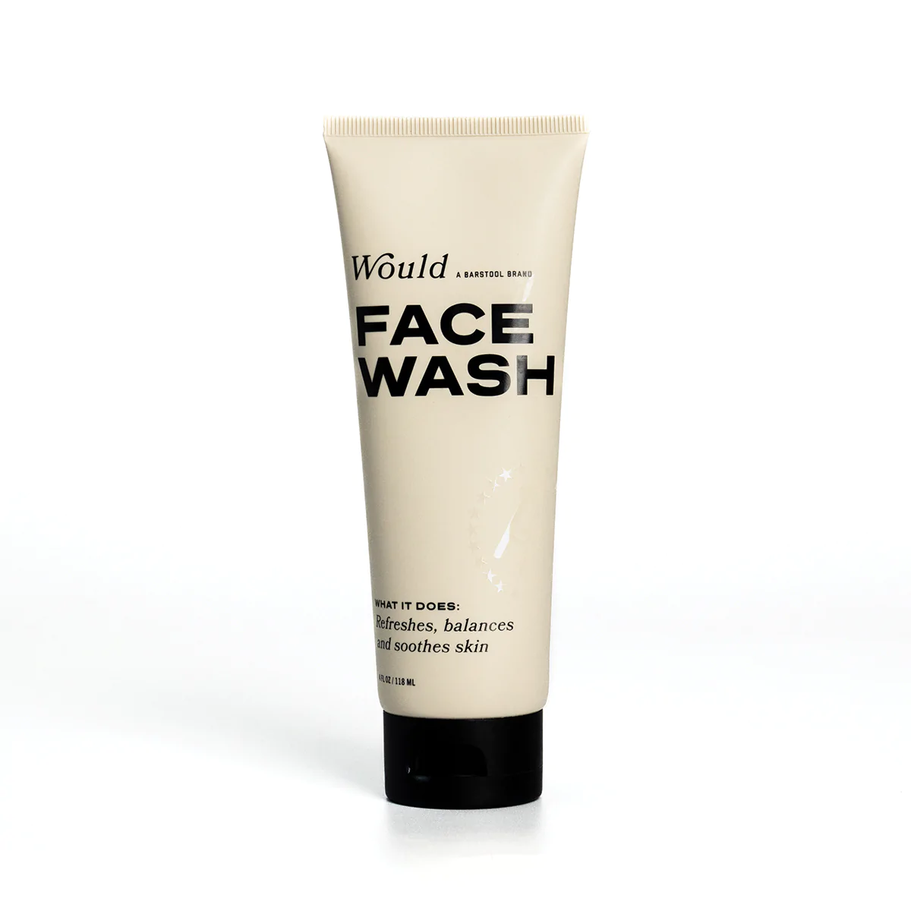
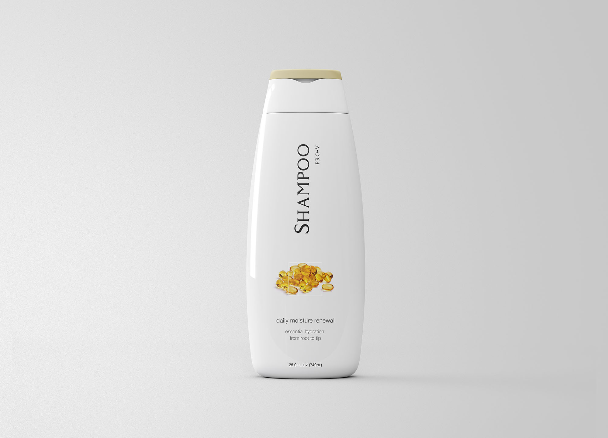

Pretty You
Beauty Bar
Your skin reflects how you feel
WE LET YOU FEEL BEAUTIFUL LOOK BEAUTIFUL AND BE BEAUTIFUL INSIDE AND OUT.
We leverage the latest skin technology and craftsmanship to deliver skincare that works as hard as you do. 'Pretty You's mission is to elevate, enable, approve, and eventually assemble confidence in ladies around the globe through astounding items that empower both inward and external beauty and otherworldly edification while additionally giving chances to self-improvement and budgetary reward.
Major Products
- Face Wash 
- Ponds
- Himalaya
- Lotus
- Shampoo 
- Pantene
- Sunsilk
- Dove
- Body Lotion
- Nivea
- Cetaphil
- Boroplus
A facial cleanser is a skincare product used to remove make-up, dead skin cells, oil, dirt, and other types of pollutants from the skin, helping to keep pores clear and prevent skin conditions. Most of the environmental impurities and cosmetic products our skin comes in contact with are not water soluble. Skin cleansers remove dirt, sebum, oil and dead skin cells—ideally without damaging or irritating the skin. Click here to check out the prices.
Face wash in our store
Shampoo is typically in the form of a viscous liquid with some exception of waterless solid form such as a bar. Shampoo was developed to replace soap for cleansing scalp and hair by removing unwanted sebum, dandruff, environmental dust, and residues of hair care products. Click here to check out the prices.
Shampoo in our store

A lotion is a topical preparation, applied to the skin with bare hands or cotton wool, with the intent to moisturise and/or treat the skin. Most body lotions are meant to simply keep the skin soft, smooth and healthy, but they can also have anti-ageing properties and contain fragrances. Click here to check out the prices.
Body Lotion in our store